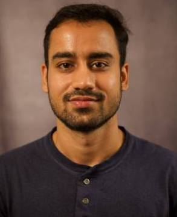
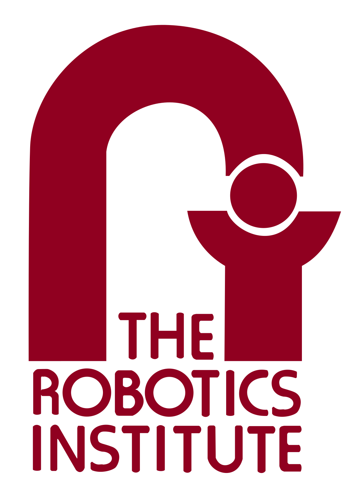
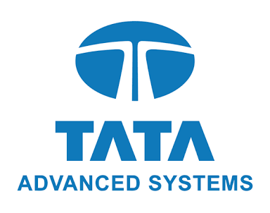

|
Bhuvan Jhamb Exploring Methods to build Spatial and Temporal Intelligence For Embodied AI Actively Seeking Internship Opportunities for Summer'24 in Computer Vision/Robotics/Embodied AI Hello! I'm a M.S. in Computer Vision student at CMU, where I'm advised by Sebastian Scherer at the AirLab. I'm driven by a deep passion for autonomous systems, especially in vision and perception! I love to do research aimed at empowering embodied agents to interact with environment in useful ways Currently, I am exploring robust and efficient techniques for 3D scene representation, with applications in both scene reconstruction and inference. Previously I spent over two years with brilliant research and product teams at Intel working on different aspects of 3D Vision, Optimization, SLAM, Sensor Fusion, Functional Safety, IP compliance, multiple classical and novel algorithms, and built various cool software and hardware stacks. Note:This page is a work in progress, please checkout my Resume or LinkedIn for more details about my work. For recreation, I enjoy going to the gym, indulging in stargazing, reading books, or binge-watching content of different genre I am always looking for exciting collaborations and opportunities, please feel free to reach out to me! Email / Resume / Google Scholar / Twitter / LinkedIn / |
 |
{kind=link}
|

CMU, Robotics Instiute |

Intel Realsense |
Intel Labs |
Indian Academy Of Sciences |
|

Tata Advanced Systems Limited |
Intelligent Systems and Control Lab, IIT Kanpur |

Robotics Club MNNIT |
NIT, Allahabad |
|
Last updated on 3rd September 2023. Website Template taken from Jon barron. |